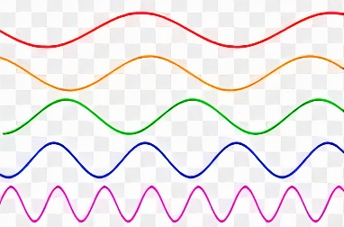

Waves
A wave can be described as a disturbance that travels through a medium from one location to another location. Consider a slinky wave as an example of a wave. When the slinky is stretched from end to end and is held at rest, it assumes a natural position known as the equilibrium or rest position. The coils of the slinky naturally assume this position, spaced equally far apart. Please check the videos section for 2 videos related to waves.
Parts of a wave
- Wavelength
- Amplitude
- Crest
- Trough